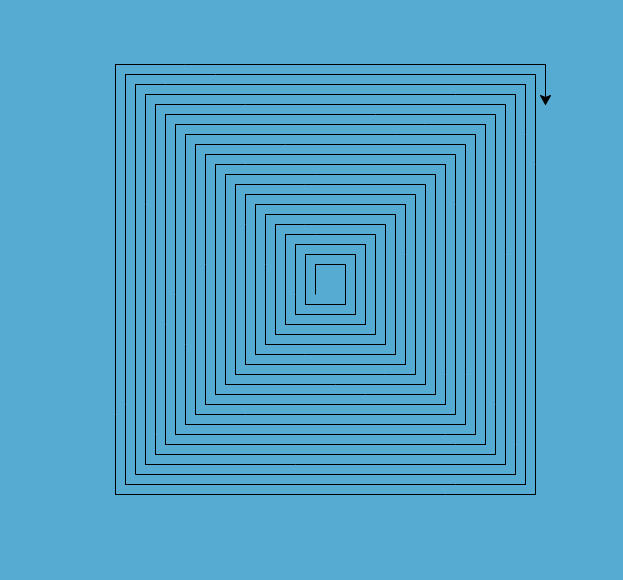
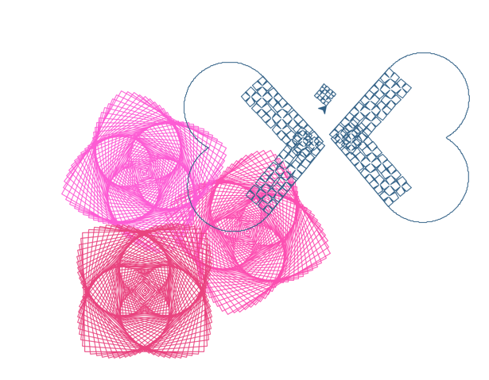
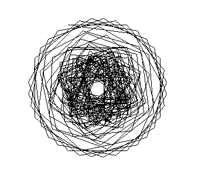
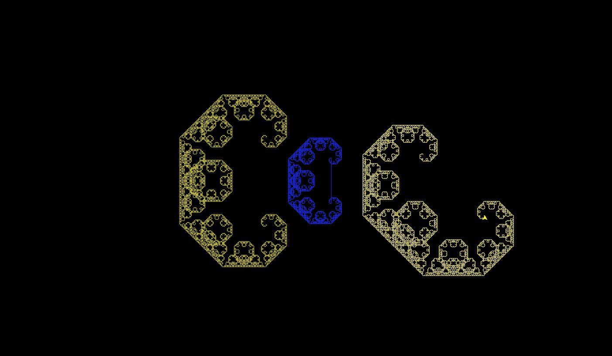
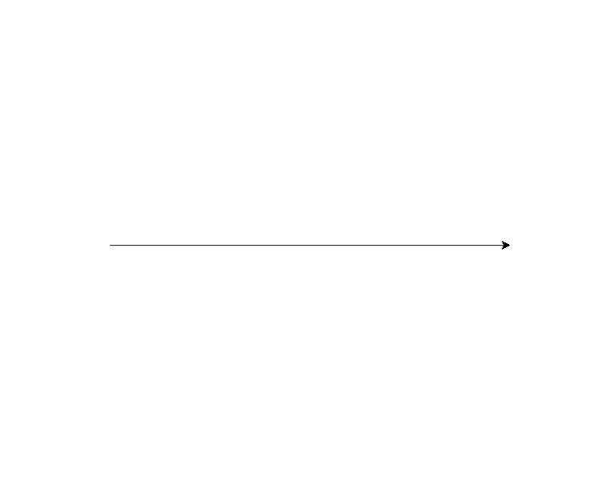

Scheme Recursion Exhibition
Please vote for your favorite entry in this semester's 61A Recursion Exposition contest. The winner should exemplify the principles of elegance, beauty, and abstraction that are prized in the Berkeley computer science curriculum. As an academic community, we should strive to recognize and reward merit and achievement (translation: please don't just vote for your friends).
In order to vote, complete and submit hw13.py. Voting is due on Friday, December 7, 5pm.
Table of Contents
- Entries
- Submission 0 - The Eyes of John DeNero
- Submission 1 - Untitled
- Submission 2 - Complex Sine Fractal
- Submission 3 - Turtles All the Way Down
- Submission 4 - Silly Sally
- Submission 5 - Untitled
- Submission 6 - Where My Grade For This Class Went
- Submission 7 - Flowers of Turkey
- Submission 8 - My Beauty
- Submission 9 - Untitled
- Submission 10 - The Cannabis Calls
- Submission 11 - Turtles on Graphics
- Submission 12 - Save the Turtles!
- Submission 13 - A Day Under the Mandelbrot Tree.
- Submission 14 - LANGTON'S ANT
Entries
Submission 0 - The Eyes of John DeNero
Like these triangles
Your grades point ever upward
When you learn from John
0/contest.scm (176 tokens)
Submission 1 - Untitled
Right angles are many
but fewer and fewer
Whil recursion stays plenty
1/contest.scm (101 tokens)
Submission 2 - Complex Sine Fractal
Two CS Partners
Blue and Gold Traverse the Bridge
Over the Abyss
2/contest.scm (193 tokens)
Submission 3 - Turtles All the Way Down
What lies under Earth?
A great turtle rests below,
On turtles down down.
3/contest.scm (255 tokens)
Submission 4 - Silly Sally
Sally could have sold
More seashells if she had not
Sold by the seashore
4/contest.scm (164 tokens)
Submission 5 - Untitled
Gather ye rosebuds while ye may,
Old time is still a-flying,
Carpe diem
5/contest.scm (254 tokens)
Submission 6 - Where My Grade For This Class Went
Oh how I wished
My grade did not drop deep down
Into this black hole.
6/contest.scm (67 tokens)
Submission 7 - Flowers of Turkey
Flowers of Turkey
Simple, Elegant and Pure
I just drew circles
7/contest.scm (196 tokens)
Submission 8 - My Beauty
This is beautiful. =)
8/contest.scm (149 tokens)
Submission 9 - Untitled
Lévy's recursion
Renders Cal at Cal deeper
than our John's humor
9/contest.scm (98 tokens)
Submission 10 - The Cannabis Calls
Juan, I may not be.
420 in Cal, It is.
Mary Juan, why not?
10/contest.scm (200 tokens)
Submission 11 - Turtles on Graphics
Carried like a god,
The weight of all this power!
My shell feels heavy...
11/contest.scm (196 tokens)
Submission 12 - Save the Turtles!
Forced Turtle Labor-
That is where we draw the line.
Scheme to save turtles.
12/contest.scm (25 tokens)
Submission 13 - A Day Under the Mandelbrot Tree.

13/contest.scm (258 tokens)
Submission 14 - LANGTON'S ANT
Around and around,
never sure where he will go,
Langton's Ant wanders.Please follow this lnk to see Submission 14.
{kind=link}
14/contest.scm (793 tokens)